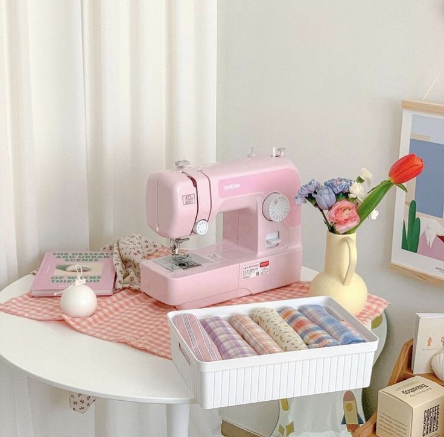

Here are some resources to start up your sewing journey!
Learn the beginner's crash course to sewing and some techniques to put your new sewing skills to action.
Interpreting sewing patterns is one of the hardest aspects I had to learn, so hopefully this video can give you a jumpstart to the world of patterning.